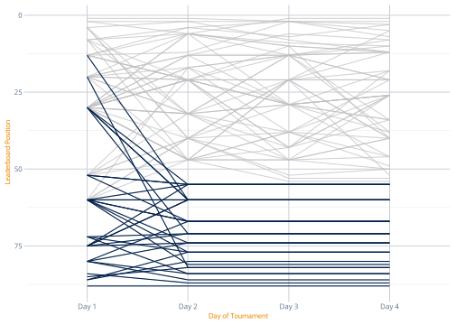
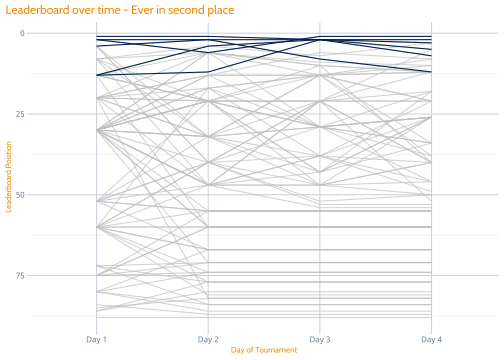
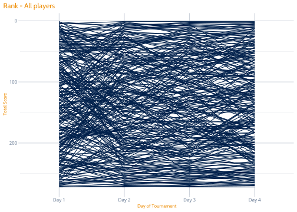

3 Initial Data Exploration
3.1 Golfer Performance
If we look at the leaderboard position of the full player field over time we end up with something that is a little overwhelming. We can several ties over time where ranks converge together and we can also see the cuts on day two from the straight lines from that point onwards. One thing I am a little surprised by in the beginning is that once you get out of the best few players you actually get a lot of variability in ranks over days. This makes me regret not taking a little more time to watch because I can see already that daily scores in the pool would have had some potentially big swings.
# Match style being used in the slides
rank_names <- c(r1_rank = "Day 1",
r2_rank = "Day 2",
r3_rank = "Day 3",
r4_rank = "Day 4")
# Add indicator for players that are cut
score_dat <- score_dat %>%
mutate(cut = ifelse(is.na(pos), TRUE, FALSE))
tx_def <- function() {theme_xaringan(text_font_size = 10,
title_font_size = 10)
}
score_pdat <- xfun::cache_rds({
score_dat %>%
select(player, r1_rank:r4_rank, cut) %>%
pivot_longer(-c(player, cut)) %>%
mutate(name = factor(name, levels = names(rank_names), labels = rank_names)) %>%
left_join(group_dict)
}, file = "score_pdat.rds", dir = cache_dir)
base_p <- score_pdat %>%
ggplot(aes(x = name, y = value, group = player)) +
labs(x = "Day of Tournament", y = "Leaderboard Position") +
scale_y_reverse() +
geom_line() +
tx_def()
base_p + labs(title = "Leaderboard over time - All players")I don’t really watch a lot of golf so coming in I was expecting players that were cut were generally would have had a bad tournament from the beginning. But we can see that while this is broadly true there were actually a few players who came out strong but had a bad day two.

We can look a little closer at the development of the top ten players over time. It looks like you get a mix of people who pretty much started and stayed there, and others who had a bad first day before finishing strong.
Even looking at those who finished in the top 10 shows that there is a lot of room to improve and even though you can have a big drop on the second day there is still time to recover.
base_p +
gghighlight(last(value) <= 10) +
labs(title = "Leaderboard over time - Finished in Top 10")Lastly let’s take a look at anyone who was ever in the top two. There were quite a few players tied for second on day three which must have made the last round exciting since they were all within striking distance of the leader.
base_p +
gghighlight(min(value) <= 2, use_direct_label = FALSE) +
labs(title = "Leaderboard over time - Ever in second place") 
Choices for the pool were made based on groups of selections, three from group A and B and two from group C. I assumed that these roughly translated to player ability but it doesn’t seem like group was an overly strong predictor of performance. The cut includes players from all groups and the top performers in the tournament were mostly those from group B. Generally it looks like the top performers in the pool were those that made strong picks from these groups since their size relative to group A also meant they were harder to pick from.
Given the large amount of variability within groups I think my original idea of fitting an HLM to identify players who performed better than their group expectation would probably not be very interesting. The original idea there was to look at predictions with/without shrinkage from hierarchical grouping but I’m not convinced it will be worth the effort considering all groups have good spread over all day four positions.
score_pdat %>%
ggplot(aes(x = name, y = value, group = player, colour = group)) +
labs(x = "Day of Tournament", y = "Leaderboard Position") +
scale_y_reverse() +
scale_colour_discrete(name = "Group") +
geom_line() +
tx_def()
score_pdat %>%
filter(name == "Day 4") %>%
ggplot(aes(x = name, y = value, fill = group)) +
labs(x = "Day of Tournament", y = "Leaderboard Position") +
geom_violin(draw_quantiles = c(0.25, 0.5, 0.75)) +
scale_fill_discrete(name = "Group") +
tx_def()3.2 Pool Performance
3.2.1 Player Choices
Player choices in each group were degined by a smaller number of “consensus” choices followed by a larger spread. The winner of the pool tended to consistently choose with the majority with the most start departure coming in group A.
winner_picks <- entry_picks_anon %>%
filter(alt_name %in% "al-Saeed, Junaid") %>%
select(-alt_name) %>% unlist
entry_picks_anon %>% select(-alt_name) %>%
gather() %>%
group_by(value) %>%
summarise(picked = n()/nrow(entry_picks_anon)) %>%
arrange(-picked) %>%
mutate(value = forcats::as_factor(value),
winner = ifelse(value %in% winner_picks, TRUE,FALSE),
label = ifelse(winner == TRUE, round(picked,2), "")) %>%
left_join(group_dict, by = c("value" = "player")) %>%
mutate(group = paste("Group",group)) %>%
ggplot(aes(x = value, y = picked, fill = winner)) +
geom_col() +
geom_text(aes(label = label), hjust = 0, size = 2, angle = 90) +
tx_def() +
labs(y = "Probability of Being Selected",
x = "Player") +
scale_fill_discrete(name = "Winner's Picks") +
theme(axis.text.x = element_text(angle = 90, hjust = 1, vjust = 0.5)) +
facet_grid(. ~ group, scales = "free", space = "free_x")
Correlation plots with this many dimensions are not particularly interesting or interpretable other than to say there are players that are selected together. This is partly built into to the pool since they are built into groups. Given that it might be interesting to look at plots separately.
wide_dat %>% select(-alt_name) %>% cor(method = c("spearman")) %>%
ggcorrplot(type = "lower",hc.order = TRUE,
colors = c(plot_cols[[1]], "white", plot_cols[[2]])) +
tx_def() +
theme(axis.text.x = element_text(size = 3),
axis.text.y = element_text(size = 3))
Looking at correlation plots by selection plot doesn’t offer much extra insight other than to provide some hope that there may indeed be some sort of pattern in the golfers that are chosen together. We’ll hope for a little a little more insight into what’s going on here when we get to PCA.
g_dat <- group_dict %>% group_by(group) %>% nest
map2(g_dat$data, c(8, 6, 4), ~ {
wide_dat %>% select(matches(.x %>% pull(player))) %>%
cor(method = c("spearman")) %>%
ggcorrplot(type = "lower",hc.order = TRUE,
colors = c(plot_cols[[1]], "white", plot_cols[[2]])) +
tx_def() +
theme(axis.text.x = element_text(size = .y),
axis.text.y = element_text(size = .y))
})## [[1]]
##
## [[2]]
##
## [[3]]
3.2.1.1 EVERSANA Choices
Let’s take a high-level look at how those in the money chose compared to the team from EVERSANA. It looks like you could get in the money with even a couple poor performers or some exceptionally low ranking golfers. The most striking difference between the top 5 and EVERSANA picks is that the EVERSANA picks are almost uniformally distributed over most of the range of possible positions while the top 5 generally had a high number of picks land in the top 5. Another trend can be seen in where EVERSANA agreed (eg, Bryson Dechambeau) who was not selected by any of the top 5 versus where they agreed (Justin Thomas) who was only selected by one player from EVERSANA. In some respects this could just be a matter of seeing that the people who won chose players with low scores and the people who lost didn’t, so we’ll have to bring something a little more rigorous to this down the road.
top_5 <- final_scores %>%
arrange(score_4) %>%
slice(1:5) %>%
pull(alt_name)
entry_picks_anon %>%
filter(alt_name %in% c(names(test_names), top_5)) %>%
pivot_longer(-alt_name) %>%
left_join(score_pdat %>% filter(name == "Day 4") %>%
select(player, value) %>%
rename(rank = value,
value = player)) %>%
arrange(rank) %>%
left_join(final_scores %>% select(alt_name, score_4)) %>%
arrange(score_4) %>%
mutate(
winner = ifelse(alt_name %in% top_5, "Top 5", "EVERSANA"),
alt_name = glue::glue("{alt_name} ({score_4})"),
value = glue::glue("{value} ({rank})"),
alt_name = forcats::as_factor(alt_name)
) %>%
arrange(rank) %>%
mutate(value = forcats::as_factor(value)) %>%
ggplot(aes(x = alt_name, y = value, colour = winner)) +
geom_point() +
tx_def() +
scale_colour_manual(name = "Top 5 vs EVERSANA", values = plot_cols[1:2]) +
labs(title = "EVERSANA Player Selections", x = "", y = "") +
theme(axis.text.x = element_text(angle = 45, hjust = 1))
3.3 Player Performance
Lastly let’s take a look at player performance. We saw that with golfers there was a big swing in the ranks over time, but how did that translate into the pool?
3.3.1 Overall
p_bp <-
final_scores %>%
gather("key", "value", -c(alt_name)) %>%
mutate(key = factor(key, labels = c("Day 1", "Day 2", "Day 3", "Day 4"))) %>%
group_by(key) %>%
arrange(key, value) %>%
mutate(pos = 1:n()) %>%
group_by(key, value) %>%
mutate(pos = min(pos)) %>%
group_by(alt_name) %>%
mutate(sd = sd(pos),
diff = max(pos) - min(pos)) %>%
ggplot(aes(x = key, y = pos, group = alt_name)) +
labs(x = "Day of Tournament", y = "Total Score") +
scale_y_reverse() +
geom_line() +
tx_def()
p_bp + labs(title = "Rank - All players")
So similar to the golfer situation we can see a lot of people were in the top ten at some point and there are some pretty drastic flips. We can see maybe a group of people who started of well and stayed doing well, an opposite group, and then a bunch of zig-zags somewhere in the middle.
p_bp +
gghighlight(min(pos) <= 10) +
labs(title = "Leaderboard over time - Ever in Top 10") +
geom_hline(yintercept = 10, colour = plot_cols[[2]])
What’s prety interesting is that it seems that most people who finished in the top 10 didn’t start there and almost half were out of the top 10 on day three. That said the winner more or less declared themselves on day two and never went back.
p_bp +
gghighlight(last(pos) <= 10) +
labs(title = "Leaderboard over time - Finished in top 10") +
geom_hline(yintercept = 10, colour = plot_cols[[2]])Now let’s do the opposite of this and take a look at the worst performers. It looks like if you had a bad first day you could escape doing very poorly but it was difficult to ever to better than 150 if you were ever worse than 200. We can also see that starting well doesn’t mean anything, presumably because you a bad second day across multiple players is impossible to recover from.
p_bp +
gghighlight(max(pos) > 200) +
labs(title = "Leaderboard over time - Ever worse than 200") +
geom_hline(yintercept = 200, colour = plot_cols[[2]])
I think one of the most fascinating things about this tournament rank data is how much variability people have across days. So let’s highlight some groups with high variability. Using a cut-point of 50 for the standard deviation in position provides a nice grop of players who had an exciting pool. This includes people who started high and had precipitous drops as well as the opposite and then people who are somewhere in-between.
p_bp +
gghighlight(sd > 50) +
labs(title = "Leaderboard over time - Rank SD > 50") +
geom_hline(yintercept = 200, colour = plot_cols[[2]])Another way of looking at this is to find players who had a difference of more than 150 in their best and worst scores.
p_bp +
gghighlight(diff > 150) +
labs(title = "Leaderboard over time - Difference in best and worst rank > 150") +
geom_hline(yintercept = 200, colour = plot_cols[[2]])Finally let’s see the EVERSANA crew.
p_bp +
gghighlight(alt_name %in% names(test_names)) +
labs(title = "Leaderboard over time - Difference in best and worst rank > 150") +
geom_hline(yintercept = 200, colour = plot_cols[[2]])